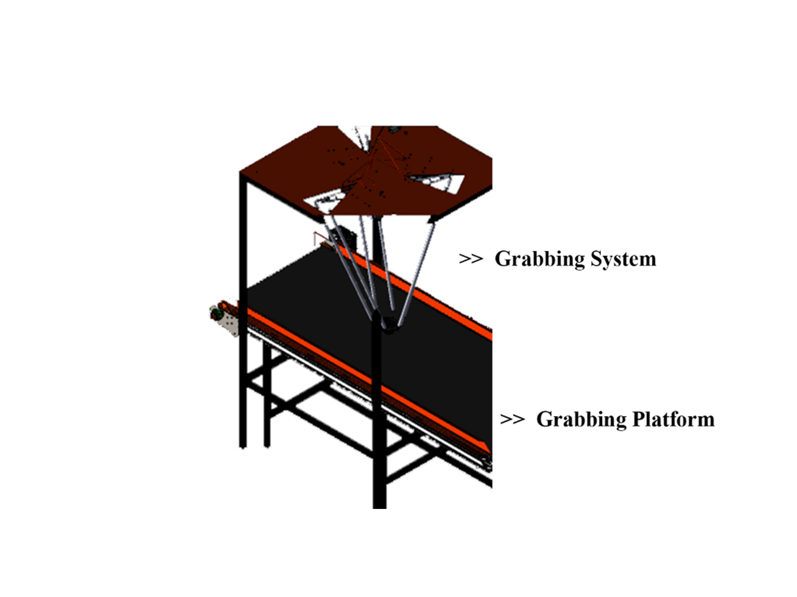

Tripod Arms
Grabbing Robot
based on Delta 3D Printer
Zhejiang Province's Key Laboratory of 3D Printing Process and Equipment
@ Zhejiang University
Advisor
Senyang Wu
Group Memebers
Zhijing Hu, Keqin Wang
What we expect?
3D printing, which is one of the most popular technology nowadays, gives manufacturers low-cost and high precision parts manufacturing process.
The advantage of high effeciency on carrying out manufacturing within a short period better supports the tripod arm system to perform the quick grabbing actions.
The upper frame of the robot arm is composed of three fixed inclined guide rails and three stepper motors running on the guide rail, which can move with high-speed and reach the accurate position the target object via programmed motion path.
As for the lower part of the grabbing robot, it is mainly controlled by two steering motors, one is worked for making the wrist of the robot rotate freely in 360 degrees; the other is worked for the grab motion of the robot hand, so as to accurately grab the target on the grabbing platform.

Steering engines are mainly used in the whole system. Compared with other rotating devices, it is a more portable, easier to control rotating device with larger torque outputs. It can better realize the rotation and movement of the grabbing robot hand.
API laser tracker can be used to track and locate, collecting relevant dataset for later calculation of the geometric error compensation.
In the early space algorithm work, coordinate positioning and space transformation needed necessary forward kinematic and inverse kinematic motion solutions to obtain the required space coordinate matrices through MATLAB.
After the coordinate operation, the error is adjusted through the reasonable algorithm and put into the actual experiment.
To know more about the details, please check on my GitHub page of this project: Tripod Arms Grabbing Robot based on Delta 3D Printer.